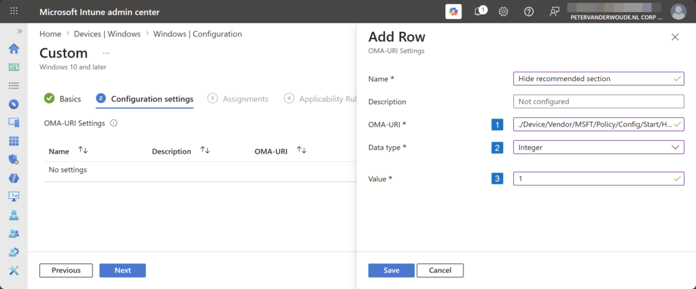
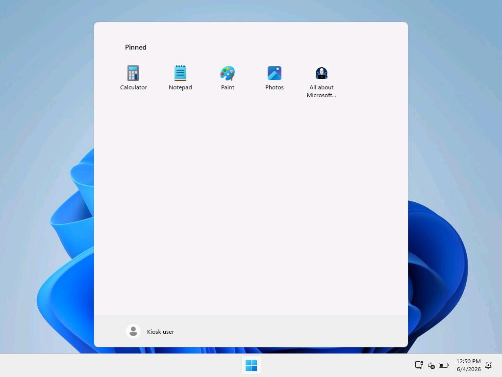

This week is all about another relatively small, but essential, configuration to further enhance the Start layout experience. Especially when using multi-app kiosk mode. That configuration is to hide the recommended section from the Start layout. Hiding that section is especially relevant when using a multi-app kiosk mode, as that includes a link to the Settings app when there are no recommendations. Even though that might sound pretty small, it does take away another item that a user could potentially click on and hitting an unnecessary blockage. In those cases lesser is better. That means that there are definitely scenarios in which it can be really useful to prevent the Start layout from displaying recommended applications and files. This post will provide a closer look at configuring removing the recommended section and experiencing that in multi-app kiosk mode.
Configuration for hiding the recommended section
When looking at hiding the recommended section from the Start layout, it is all about the Remove Recommended section from Start Menu setting. That setting was introduced a few years ago and is already easily configurable within the Group Policy. The values are pretty straightforward, as it can be configured to Recommended section shown (0) or Recommended section hidden (1). That setting is also available via the Policy CSP as an ADMX-backed setting, as it relies on the StartMenu.admx. It is, however, not available via the Settings Catalog at this moment. That means that the configuration still relies on using Custom configuration profiles. The following nine steps walk through the configuration of removing the recommended section from the Start layout.
- Open the Microsoft Intune admin center navigate to Devices > Windows > Configuration
- On the Windows | Configuration blade, click Create > New policy
- On the Create a profile page, select Windows 10 and later > Templates > Custom and click Create
- On the Basics page, provide a unique Name to distinguish the profile from other custom profiles and click Next
- On the Configuration settings page, as shown below in Figure 1, click Add to add the following row and click Next
- OMA-URI setting – This setting is used to hide the recommended section in the Start layout
- Name: Provide a name for the OMA-URI setting to distinguish it from other similar settings
- Description: (Optional) Provide a description for the OMA-URI setting to further differentiate settings
- OMA-URI (1): Specify ./Device/Vendor/MSFT/Policy/Config/Start/HideRecommendedSection
- Data type (2): Select Integer as value
- Value (3): Specify 1 as value
{kind=link}

- On the Scope tags page, configure the applicable scopes and click Next
- On the Assignments page, configure the assignment for the required devices and click Next
- On the Applicability rules page, configure the applicability rules, and click Next
- On the Review + create page, verify the configuration and click Create
Note: The expectation is that this setting will eventually end up in the Settings Catalog.
Experiencing the hidden recommended section
After applying the configuration of hiding the recommended section from the Start layout, experiencing the configuration is pretty straightforward. For the best overview it is probably the best and easiest to show a before and after. When creating a custom Start layout, it will by default also show a recommended section that shows a Launch Start Settings link. The latter can be used to open the Settings app, if it is not blocked. Either way, it breaks the user experience. That is the main reason why that section is better left out on multi-app kiosk devices. Below in Figure 2 and Figure 3 is an overview of the before and after situation, when using the provided configuration. Pretty straightforward and nice and clean.
{kind=link}
{kind=link}

More information
For more information about managing Start, refer to the following docs.
Discover more from All about Microsoft Intune
Subscribe to get the latest posts sent to your email.